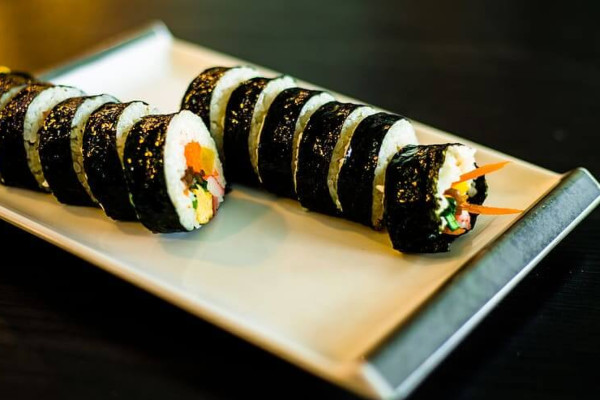
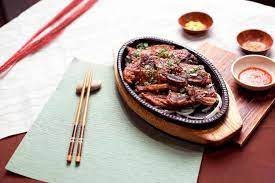
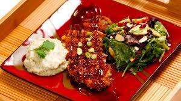
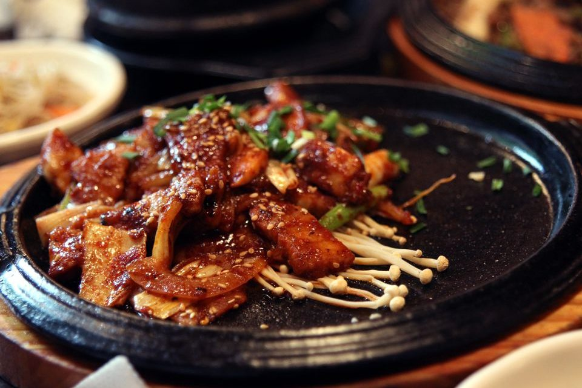
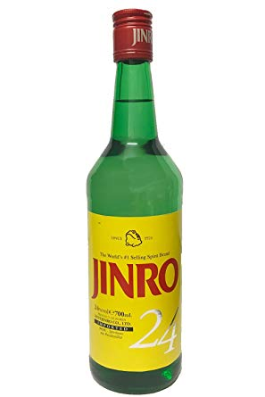
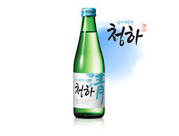
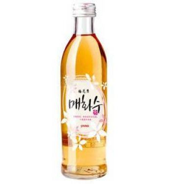
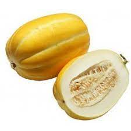
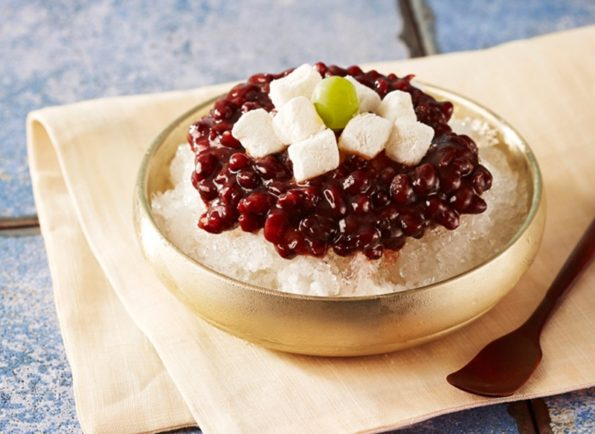

Entrantes
| Mandu: empanadillas rellenas de verduras y carne (no picante
a menos que sean rellenas de kimchi). Al vapor, fritas o en sopa
(la sopa se llama Mandu Guk). Precio: 4,99€ |
|
|  | Rollos de arroz envueltos en alga kim. Precio: 4,99€ |
|  | Galbi: Costillas de vaca o cerdo asadas. Precio: 4,99€ |
Principales
|  | Donkatsu: Filete de cerdo apanado y frito que se complementa
con una salsa agridulce. Precio: 14,99€ |
 |
Tteokbokki: Pastel de arroz cocido en salsa picante de
gochujang con azúcar y se acompaña de algunas verduras y pasta
de pescado eomuk. Precio: 11,99€ |
|  | Bulgogi: Clásico coreano, y favorito de los
extranjeros. Se trata de cortes blandos de carne de vacuno
marinados con salsa de soja, ajo y azúcar. Al no ser picante es
un plato fácil de probar en un primer encuentro con la
gastronomía coreana. Precio: 10,99€ |
 |
Bossam: Carne de cerdo cocida al vapor y picada fina que se
come envuelta en verduras, generalmente en lechuga. Precio: 9.99€ |
Bebidas
|  | Soju: bebida coreana tradicional por excelencia,
Originariamente se hacía con arroz, pero ahora se combina con otros almidones. Precio: 4,50€ |
|  | Cheongju: Es un vino de arroz claro, muy parecido al sake. Precio: 3,25€ |
|  | Maehwasu: Licor elaborado con ciruelas, mucho más suave que el soju y con menor graduación. Precio: 2,99€ |
Postres
|  | Melón Coreano: Es amarillo y menos dulce que el occidental.
Se puede comer hasta con cáscara. Sólo se cultiva en Corea. Precio: 3,99€ |
|  | Bingsu: Postre que consiste en hielo picado cubierto de leche condensada y
otros ingredientes de lo más variopintos, como judías o melón con tomate. Precio: 5,50€ |
 |
Bangarae Banana Milk: Es parecido a un yogur de plátano bebible,
aunque mucho más dulce. Precio: 2,99€ |